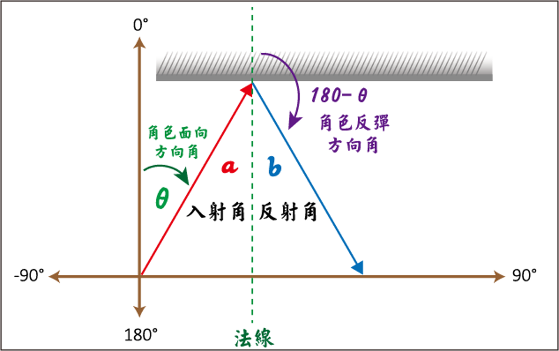
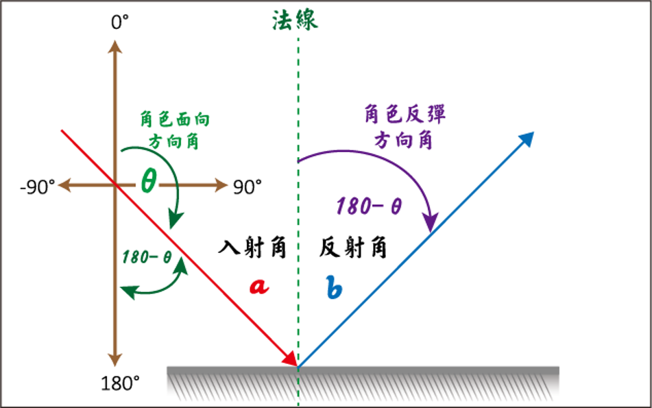
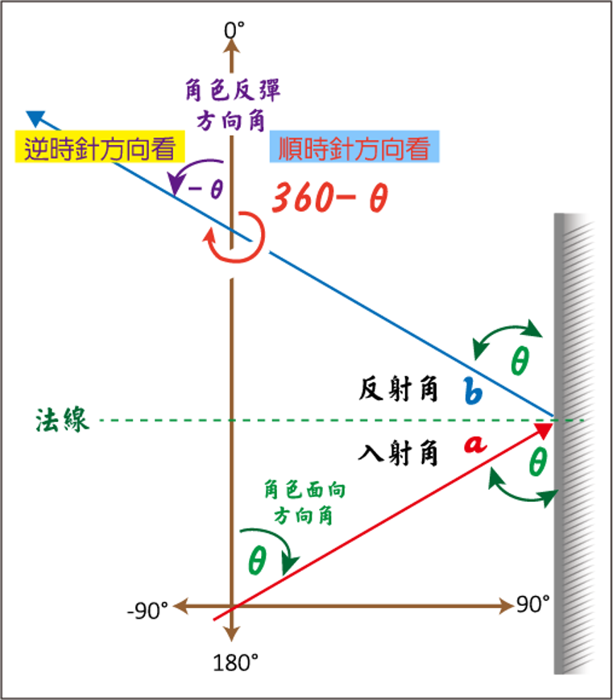
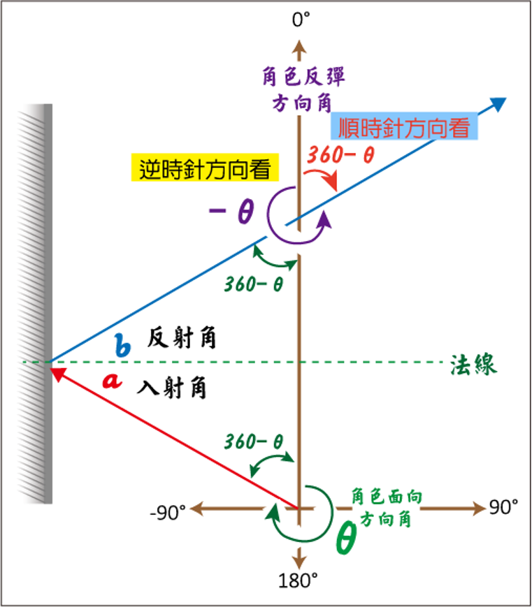

|
|
|---|
 反 彈
反 彈
「反彈」是指角色朝向原行進方向的反方向運動。一般會以180°-θ°來表示（θ°表示原行進方向角度）。
在Scratch中有一個〈碰到邊緣反彈積木〉可以設置當角色碰到邊緣就反彈，它會使角色在碰到邊緣時，自動以『自然反彈』（以多少角度進入便以相同的角度反彈出）的角度折回，也就是上對下，左對右的「相對反彈」。除此之外，在遊戲編程中，你也可以使角色在碰觸到另一角色後出現反彈動作效果，這種方式就可以自定義反彈的角度。
當然，你可以自己決定反彈角度的大小，但有關反彈的方向仍是得合乎常理自然才不會太過誇張，我們套用自然科學上的名詞來說，就是『入射角』與『反射角』的概念。
首先，有關『反彈』的方向要以Scratch中的定義來計算，也就是在Scratch中，角色的移動方向、面朝向...等，都是透過角度來描述，以向上是0°、向右是90°、向下是180°、向左是-90°來定義（預設是向右90°）。
在『自然反彈』的狀態下，我們可以透過「入射角」等於「反射角」的效果實現。以下就是角色碰撞到舞台的上、下、右、左邊緣後反彈的角度方向[以θ 表示角色面向(進入)的方向值]。

⑴角色碰到『上邊緣』。反彈的角度方向是〔180-θ〕

⑵角色碰到『下邊緣』。反彈的角度方向是〔180-θ〕

⑶角色碰到『右邊緣』。反彈的角度方向是〔-θ〕或〔360-θ〕

⑷角色碰到『左邊緣』。反彈的角度方向是〔-θ〕或〔360-θ〕